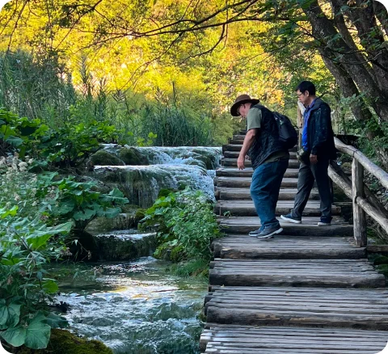
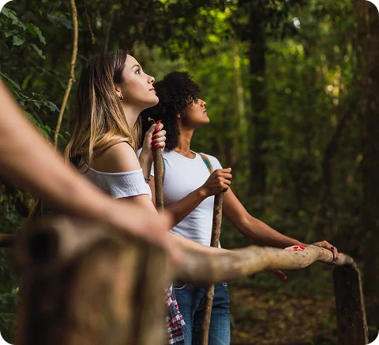
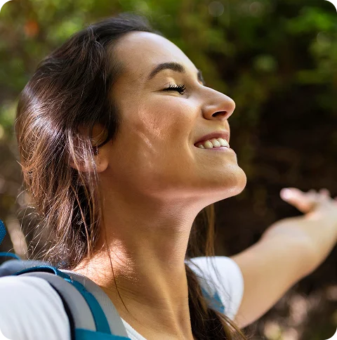
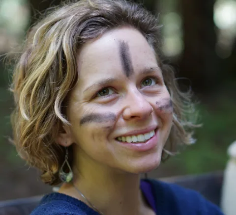

Council of Waters and Trees
A four-day gathering. A council with the more-than-human world
Restoring our webs of relationship — with nature’s voices in the circle.
Council of Waters and Trees weaves Forest Therapy, the Way of Council, and Aloha Ropes — itself a powerful practice taught only by ANFT — into an immersion where you will learn new ways of cross-species communication. This may sound exotic, but know this: you are built with the necessary abilities. If you don’t know them, it’s because your culture has forgotten. You will quickly recover these ancient skills.
I began developing Council of Waters and Trees more than ten years ago, and I have carried it since to forests on several continents — guiding it, listening to what each place and company asked of it, and refining it walk by walk. What you will experience is not a format assembled for a brochure. It is a practice with a history: shaped by the redwoods and the cloud forests, by rivers on more than one hemisphere, and by the hundreds of people and more-than-human beings who have sat in its councils. It is still being refined. Every gathering teaches it something.
— M. Amos Clifford

Who it’s for
This gathering is for trained forest therapy guides, practitioners, and others who feel called to deepen their experience of relational practice with the more-than-human world. It calls to the wild urge that knows there is a deeper belonging; that feels the beckoning of the elder brothers and sisters outside our circle of humans.
You will learn a powerful practice that is in the domain of the way of the guided — here, even experienced guides are led. Each step in this carefully crafted sequence is experiential. It’s not an information dump; it’s about knowing.

What you’ll experience
Over four days, you will:
- engage in guided forest therapy walks
- participate in a range of forms of council
- enter into dialogue with another-than-human being through the practice of Aloha Ropes
- give voice to that being in a ceremonial council with the cohort
- deepen your capacity for sensory presence, embodiment, and listening.
Mornings are devoted to the experiential practices of Forest Therapy. Council circles are where we will integrate our new knowledge; where we will metabolize the strange.

What makes this different
Council of Waters and Trees combines the relational practices of forest therapy, the heart as an organ of perception, and the imaginal world through which we exchange understanding across species. These three threads together are what make the practice possible. Together, they become a way of restoring relationships — between humans, and between humans and the wider community of beings we live alongside.
The practice is real; the relationships you enter into are real; and the changes that follow may surprise you. You won’t just study these ideas; for four days you and your companions will live the reality of them.

Why join us
You will leave equipped — not certified, not credentialed, but quietly equipped — to be a point of healing in your own community and place.
You will carry practices, relationships, and a way of listening that does not stay behind when the gathering ends.
You will join others who are walking the same threshold, and you will be part of a wider field of practitioners learning to enter into restorative dialogue with the living world.
Council of Waters and Trees is for those ready to listen more deeply, learn more directly, and step into deeper relationship with the living world.
Investment: $650 per participant. Locations to be announced.